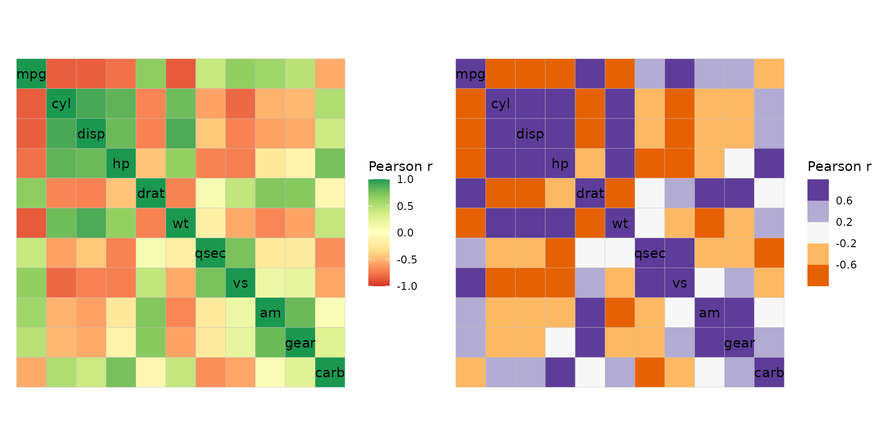
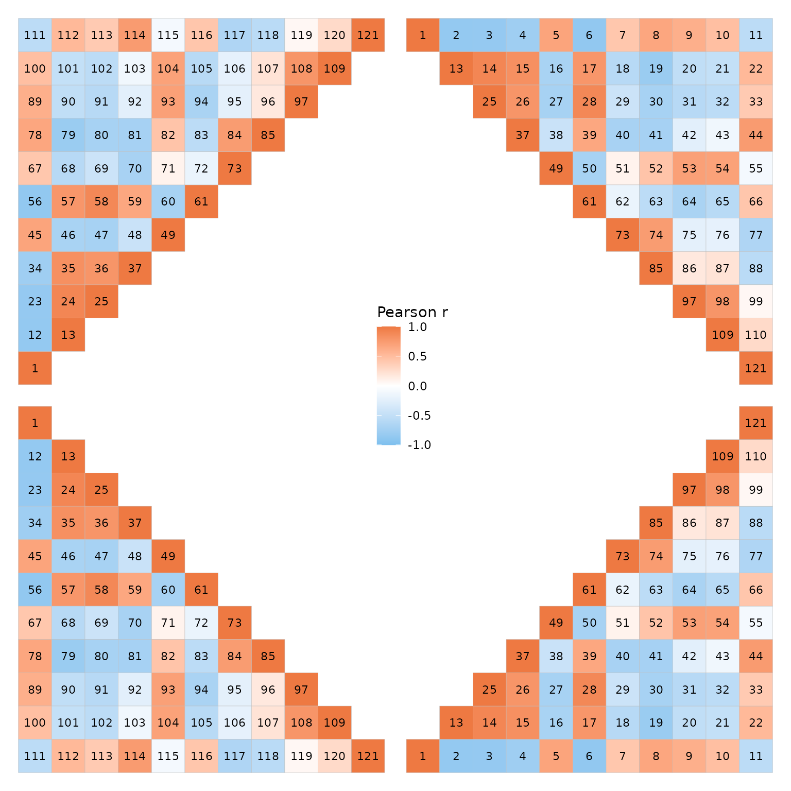
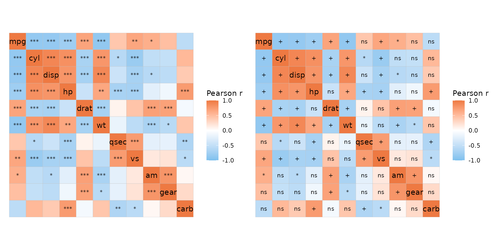
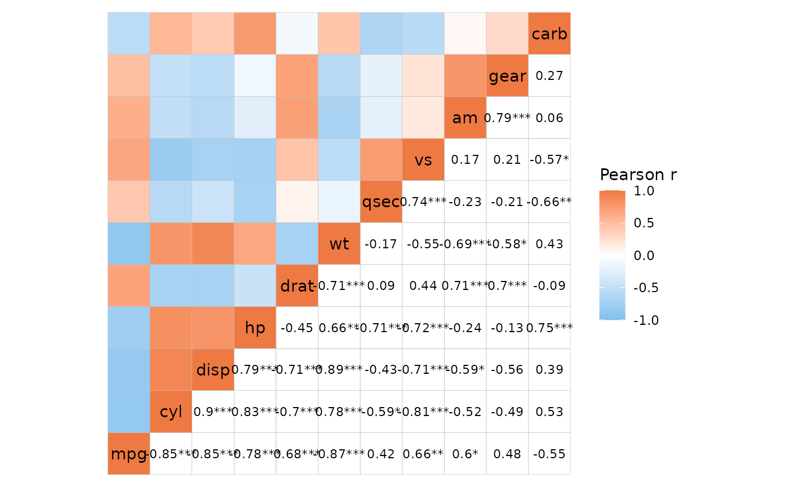
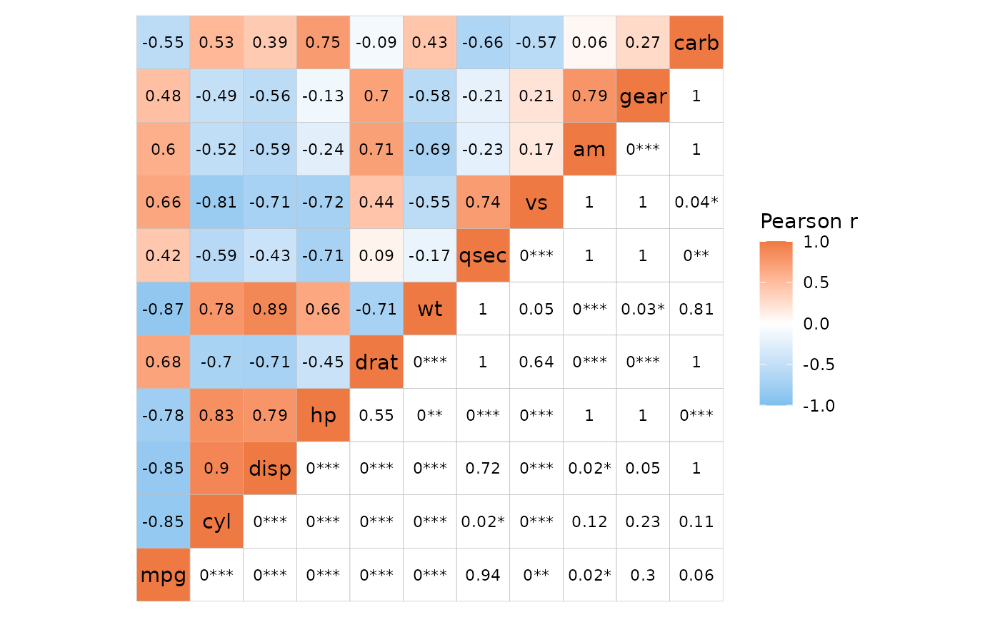
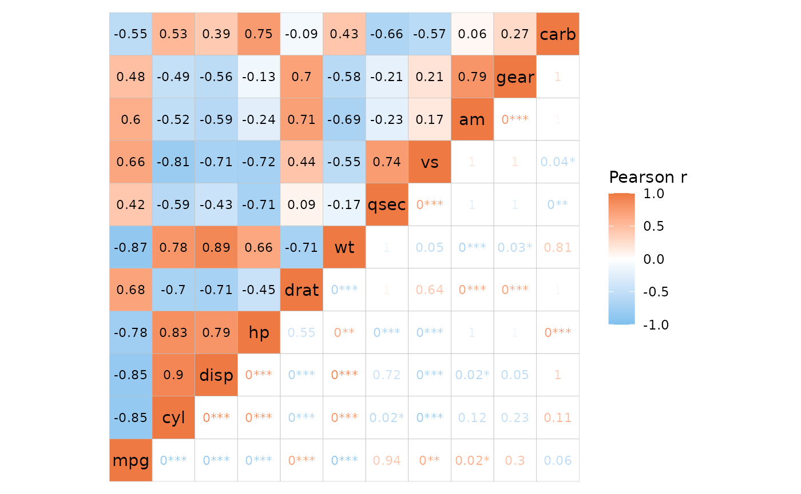
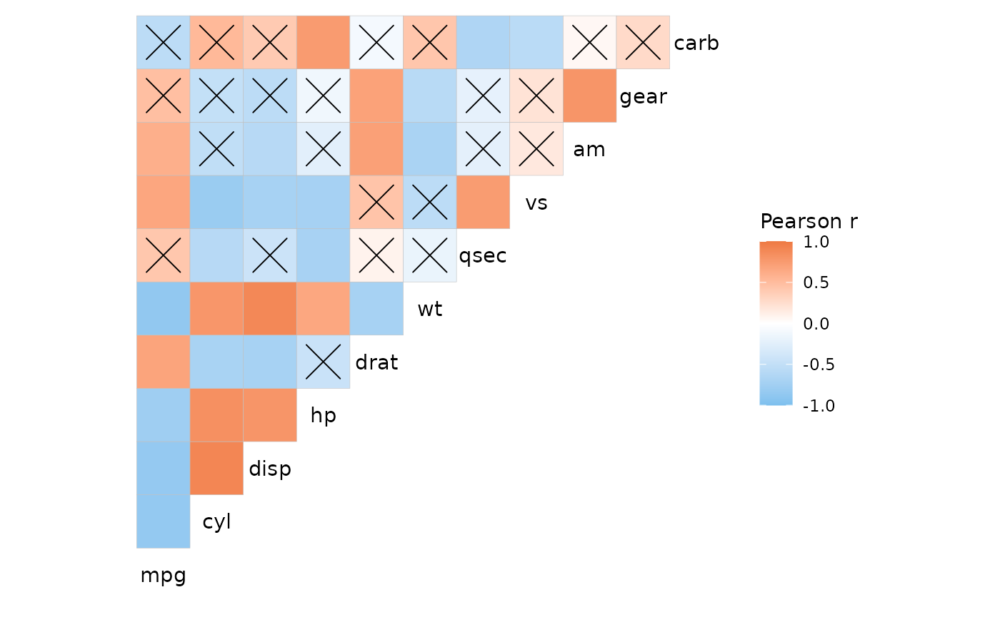

Correlation heatmaps can be made easily using the
ggcorrhm() function. ggcorrhm() is a wrapper
for (and shares most of its arguments with) gghm() and
calculates the correlation matrix of the input to make a heatmap with
gghm(). If one matrix is provided the column-column
correlations are plotted. If two matrices are provided, the correlations
between the columns in the two matrices are plotted. By using
cor_method and cor_use, different
method and use arguments can be passed to
stats::cor().
ggcorrhm(mtcars)

Changing the colours
ggcorrhm() sets the fill scale to use
ggplot2::scale_fill_gradient2() with limits set to [-1, 1].
Unique to ggcorrhm() are the arguments high,
mid and low to control the legend colours.
Like with gghm(), the bins and
limits arguments create a binned scale and change the
limits, respectively.
ggcorrhm(mtcars, high = "green", low = "magenta", mid = "yellow", bins = 4L)
If complete control is needed, the col_scale argument
can be used to overwrite the default scale. This can be a string
specifying a Brewer or Viridis scale, or a ggplot2 scale
object.
plt1 <- ggcorrhm(mtcars, col_scale = "RdYlGn")
# Arguments like bins and limits still work with brewer and viridis scales
plt2 <- ggcorrhm(mtcars, col_scale = "PuOr", bins = 5L)
plt1 + plt2
Changing the layout
For symmetric heatmaps, the layout argument can be used
to get triangular layouts. The possible layouts are full matrix, top
left, top right, bottom left, and bottom right. Note that while the top
right and bottom left layouts are just the top right and bottom left
triangles of the symmetric matrix, top left and bottom right layouts are
actually the bottom left and top right layouts with a flipped y axis to
retain the diagonal. This means that some layouts may have the y axis
order reversed.
plt1 <- ggcorrhm(mtcars, layout = "topleft")
# The diagonal is displayed by default but can be hidden using the `include_diag` argument
# Layouts can be specified by the first letters e.g. br, tl, f (for full), w (whole, same as full)
plt2 <- ggcorrhm(mtcars, layout = "br", include_diag = FALSE)
plt1 + plt2
Label customisation
For symmetric matrices, the axis names are drawn on the diagonal. The
show_names_diag, show_names_x and
show_names_y arguments control where names should be
drawn.
The looks of the names displayed on the diagonal of a symmetric
matrix can be adjusted with the names_diag_params argument,
which takes a named list of parameters to pass to
ggplot2::geom_text(). For names displayed on the x and y
axes, use ggplot2::theme() on the generated plot object to
change the appearance.
plt1 <- ggcorrhm(mtcars, layout = "bl", legend_order = NA, include_diag = FALSE,
names_diag_params = list(
angle = 45, vjust = 0.5, hjust = 0.5, colour = "magenta"
))
# Also take vectorised input
set.seed(123)
plt2 <- ggcorrhm(mtcars, layout = "br", include_diag = FALSE,
names_diag_params = list(
angle = c(0, rep(-45, 9), 90),
hjust = c(rep(0.7, 10), 0.3),
colour = sample(c("red", "green", "blue"), 11, TRUE)
))
plt1 + plt2Legend position
The legend can be moved around by adding to the theme of the output
plot using ggplot2::theme(). Use the
legend.position.inside argument to move the legend to the
plotting area to make use of the empty space of triangular layouts.
plt1 <- ggcorrhm(mtcars) +
theme(legend.position = "top",
legend.title = element_text(vjust = 0.8))
plt2 <- ggcorrhm(mtcars, layout = "br") +
theme(legend.position = "inside",
legend.position.inside = c(0.3, 0.75))
plt1 + plt2
Clustering and annotation
Just like with gghm(), the heatmap can be clustered and
annotated. Triangular layouts limit the positions of annotation and
dendrograms to the non-empty sides of the heatmap.
set.seed(123)
# Make a correlation heatmap with a triangular layout, annotations and clustering
row_annot <- data.frame(.names = colnames(mtcars),
annot1 = sample(letters[1:3], ncol(mtcars), TRUE),
annot2 = rnorm(ncol(mtcars)))
ggcorrhm(mtcars, layout = "tl",
cluster_rows = TRUE, cluster_cols = TRUE,
show_dend_rows = FALSE,
annot_rows_df = row_annot,
annot_rows_names_side = "top")
Cell text
The cell_labels argument labels cells with their values
or some user-supplied values, explained more in the heatmap article. If
cell_labels is a matrix/data frame it should be in the
shape of the matrix being plotted (using the same row and column names),
which for ggcorrhm is the correlation matrix. To keep in
mind for triangular layouts is that the top left or bottom right
triangles will display the bottom left or top right triangles with the y
axis order flipped, and this is reflected in the cell labels too.
lab_mat <- matrix(1:121, nrow = 11, ncol = 11, byrow = TRUE,
dimnames = list(colnames(mtcars), colnames(mtcars)))
plt_list <- lapply(c("tl", "tr", "bl", "br"), function(lt) {
# Play a bit with the legend for the last plot
legend_order <- if (lt == "br") 1 else NA
ggcorrhm(mtcars, layout = lt, legend_order = legend_order,
cell_labels = lab_mat, show_names_diag = FALSE) +
theme(legend.position = "inside",
legend.position.inside = c(0.025, 1.075))
})
wrap_plots(plt_list)
Cell shape
Correlation heatmaps are sometimes plotted with circles. Passing a
value from 1 to 25 to the mode argument allows for
different cell shapes. Shapes 21-25 support filling and use fill scales
while 1-20 are not filled and use colour scales (relevant if a scale
object is passed). The shape size is set to vary between the values in
the size_range argument (not found in gghm()),
scaling with the absolute value of the correlation.
size_scale can be provided to overwrite this behaviour. The
size legend is hidden by default when using ggcorrhm() as
it would only show the absolute values of the correlations (but the
legend can be shown with the legend_order argument if
necessary).
Setting mode to ‘text’ writes the values in empty cells,
with the text colour scaling with the correlation values.
# If mode is a number, the R pch symbols are used, meaning 21 produces filled circles.
plt1 <- ggcorrhm(mtcars, mode = 21) + labs(title = "mode = 21")
# It is also possible to use shapes other than circles. Only 21-25 support filling.
# Change the size range using the size_range argument
plt2 <- ggcorrhm(mtcars, mode = 23, size_range = c(2, 7)) +
# Can add a grid in the background with ggplot2::theme()
theme(panel.grid.major = element_line()) +
labs(title = "mode = 23")
plt1 + plt2
It’s also possible to draw mixed layouts by providing two values to
layout and mode. See the mixed layouts article for more details.
P-values
ggcorrhm() adds support for correlation p-values which
can be calculated by setting the p_values argument to
TRUE. The values can be adjusted for multiple testing by
passing a string specifying the adjustment method to the
p_adjust argument. If the correlation matrix is symmetric,
the diagonal is excluded and only half of the off-diagonal values are
used for the adjustment. The calculated p-values will be included in the
data if return_data is TRUE. P-values and
adjusted p-values for the correlations of the diagonal in a symmetric
matrix are set to 0 as the correlations are always 1.
By default, cells are marked with asterisks if p_values
is TRUE. The p_thresholds argument controls
the p-value thresholds. p_thresholds must be NULL (for no
thresholds or symbols) or a named numeric vector where the values
specify the thresholds (in ascending order) and the names are the
symbols to use when an adjusted p-value is below each threshold.
stats::symnum() is used to convert p-values and the last
value of p_thresholds must be 1 (or any higher number) to
set the upper bound. By default, p_thresholds is set to be
c("***" = 0.001, "**" = 0.01, "*" = 0.05", 1). As can be
seen, 1 is left unnamed so that any p-values between 0.05 and 1 are
unmarked.
# P-value symbols added to the plot
plt1 <- ggcorrhm(mtcars, p_values = TRUE, p_adjust = "bonferroni")
# Changing the symbols
plt2 <- ggcorrhm(mtcars, p_values = TRUE, p_adjust = "bonferroni",
p_thresholds = c("+" = 0.01, "*" = 0.05, "ns" = 1))
plt1 + plt2
In a mixed layout it is possible to display p-values in only half of
the plot by passing a vector or list of length two to the
p_values argument. If cell_labels is
TRUE (so that correlation values are written in the cells),
the symbols from p_thresholds are added at the end of the
correlation values.
# P-values only in the bottom right, mode 'none' for labels with empty background
ggcorrhm(mtcars, layout = c("tl", "br"), mode = c("hm", "none"), p_adjust = "bonferroni",
p_values = c(FALSE, TRUE), cell_labels = c(FALSE, TRUE))
It is also possible to write out the p-values instead of correlation
values by setting both cell_labels and
cell_label_p to TRUE.
# P-values and labels only in one half, correlation labels in the other
ggcorrhm(mtcars, layout = c("tl", "br"), mode = c("hm", "none"), p_adjust = "bonferroni",
p_values = c(FALSE, TRUE), cell_labels = TRUE,
cell_label_p = c(FALSE, TRUE))
This is also carried over to ‘text’ mode.
# Same as previous but text mode
ggcorrhm(mtcars, layout = c("tl", "br"), mode = c("hm", "text"), p_adjust = "bonferroni",
p_values = c(FALSE, TRUE),
# In text mode the labels are displayed regardless so cell_labels can be FALSE
cell_labels = c(TRUE, FALSE),
cell_label_p = c(FALSE, TRUE))
By returning the data and using ggplot2 functions it is
possible to be more creative with the p-value marking than
ggcorrhm() allows out of the box.
p <- ggcorrhm(mtcars, p_values = TRUE, p_thresholds = NULL,
p_adjust = "bonferroni", return_data = TRUE,
layout = "br", include_diag = FALSE)
p$plot_data <- mutate(p$plot_data,
p_lty = case_when(p_adj < 0.05 ~ 1, TRUE ~ 3),
p_lwd = case_when(p_adj < 0.05 ~ 1, TRUE ~ 0.5),
p_size = -log10(p_adj))
ggcorrhm(mtcars, border_lty = p$plot_data$p_lty, border_lwd = p$plot_data$p_lwd,
layout = "br", include_diag = FALSE) +
geom_point(aes(size = p_size), data = p$plot_data %>%
filter(p_adj < 0.05, as.character(row) != as.character(col)),
shape = "*") +
scale_size(range = c(4, 8)) +
labs(size = "-log10(p_adj)")
p <- ggcorrhm(mtcars, p_values = TRUE, p_thresholds = NULL,
p_adjust = "bonferroni", return_data = TRUE,
layout = "tl", include_diag = FALSE)
ggcorrhm(mtcars, layout = "tl", include_diag = FALSE) +
geom_point(data = p$plot_data %>%
# Mark cells above a threshold
filter(p_adj >= 0.05, as.character(row) != as.character(col)),
shape = 4, size = 8)
Other packages
A benefit of making the plot with ggplot2 is the
possibility of modifying and arranging the plot using
ggplot2 and its many extensions. ggcorrheatmap
is convenient for making simple correlation heatmaps, with options for
extensive customisation of the appearance and layout, and built-in
support for clustering (with dendrograms) and annotation. Another
package for making correlation heatmaps with ggplot2 is
ggcorrplot which is faster and has more ways of visualising
p-values. If having the plot made with ggplot2 is not
necessary, the corrplot package can make flexible
correlation plots with many alternative visualisations.